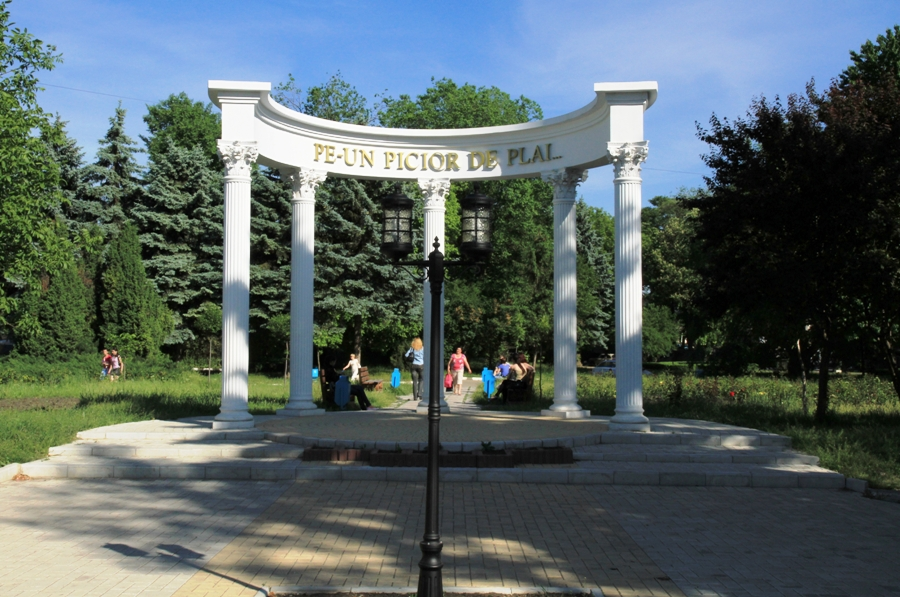
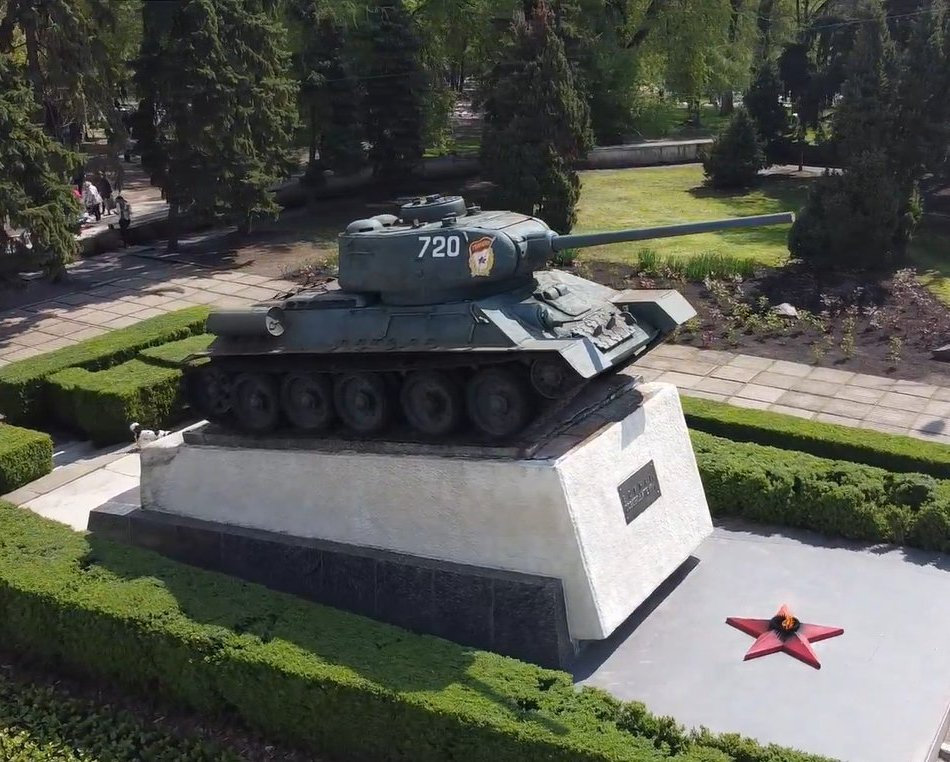
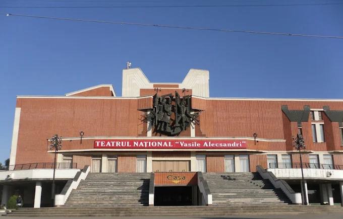

Достопримечательности
Центральный парк имени Михая Волонтира

это одно из самых любимых мест отдыха жителей города. Просторные аллеи, ухоженные зелёные зоны и уютные скамейки создают атмосферу спокойствия и уюта. Здесь можно прогуляться в тени деревьев, провести время с семьёй или просто насладиться природой в самом центре города. Парк является важной частью городской жизни и часто становится площадкой для культурных мероприятий и праздников.
Танка Т-34

Памятник-танк Т-34 в Бельцах — это легендарная боевая машина, установленная на постаменте в центре города 23 февраля 1968 года к 50-летию советской армии по инициативе школьников. Танк с бортовым номером 720, прозванный «Освободителем», участвовал в боях за город в 1944 году и прошел модернизацию после войны.
Театр "Василе Александри"

Это самый известный театр в Бельцах. Он как старый актер с богатой биографией и сотнями ролей за плечами. 📜 Коротко о нём: Основан в 1957 году Сначала была только русская труппа, позже появилась молдавская В 1990 году получил статус национального театра и новое здание 🏛️ Что внутри: Большой и малый залы Даже есть круговая сцена (это когда зрители могут быть почти со всех сторон — как будто ты внутри спектакля 🎬) Около 190 спектаклей поставлено за всё время